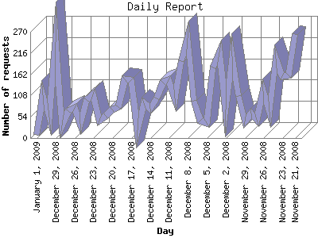

The Daily Report identifies the activity for each day within the reporting period. Remember that one page hit can result in several server requests as the images for each page are loaded.

| Day | Number of requests | Number of page requests | |
|---|---|---|---|
| 1. | November 21, 2008 | 264 | 98 |
| 2. | November 22, 2008 | 160 | 110 |
| 3. | November 23, 2008 | 158 | 111 |
| 4. | November 24, 2008 | 201 | 102 |
| 5. | November 25, 2008 | 66 | 35 |
| 6. | November 26, 2008 | 119 | 67 |
| 7. | November 27, 2008 | 47 | 41 |
| 8. | November 28, 2008 | 62 | 36 |
| 9. | November 29, 2008 | 43 | 25 |
| 10. | November 30, 2008 | 106 | 70 |
| 11. | December 1, 2008 | 208 | 72 |
| 12. | December 2, 2008 | 72 | 41 |
| 13. | December 3, 2008 | 218 | 92 |
| 14. | December 4, 2008 | 179 | 51 |
| 15. | December 5, 2008 | 39 | 31 |
| 16. | December 6, 2008 | 44 | 42 |
| 17. | December 7, 2008 | 95 | 59 |
| 18. | December 8, 2008 | 254 | 130 |
| 19. | December 9, 2008 | 196 | 78 |
| 20. | December 10, 2008 | 101 | 50 |
| 21. | December 11, 2008 | 147 | 60 |
| 22. | December 12, 2008 | 142 | 48 |
| 23. | December 13, 2008 | 100 | 65 |
| 24. | December 14, 2008 | 75 | 41 |
| 25. | December 15, 2008 | 89 | 34 |
| 26. | December 16, 2008 | 20 | 16 |
| 27. | December 17, 2008 | 147 | 41 |
| 28. | December 18, 2008 | 150 | 52 |
| 29. | December 19, 2008 | 79 | 44 |
| 30. | December 20, 2008 | 72 | 44 |
| 31. | December 21, 2008 | 56 | 47 |
| 32. | December 22, 2008 | 45 | 28 |
| 33. | December 23, 2008 | 110 | 69 |
| 34. | December 24, 2008 | 96 | 67 |
| 35. | December 25, 2008 | 37 | 34 |
| 36. | December 26, 2008 | 77 | 46 |
| 37. | December 27, 2008 | 69 | 40 |
| 38. | December 28, 2008 | 32 | 31 |
| 39. | December 29, 2008 | 243 | 65 |
| 40. | December 30, 2008 | 52 | 35 |
| 41. | December 31, 2008 | 108 | 104 |
| 42. | January 1, 2009 | 8 | 8 |
Most active day October 2, 2008 : 250 pages sent. 264 requests handled.
Daily average: 56 pages sent. 109 requests handled.
This report was generated on January 9, 2009 16:38.
Report time frame July 11, 2008 00:18 to January 1, 2009 04:01.
| Web statistics report produced by: analog 6.0 / Report Magic 2.21 |